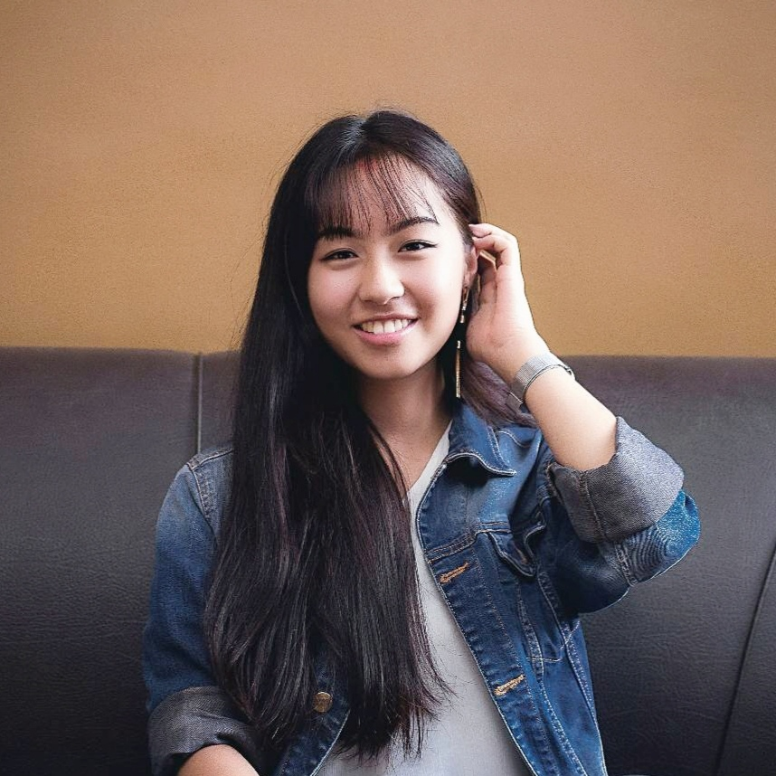

Girls in Tech - Nepal
Outreach Coordinator Ambassador, Jan 2021-Present
Reach out to individuals for speaker sessions, moderate webinars, promote Girls in Tech.COMPUTER ENGINEERING STUDENT
I am a second-year Computer Engineering Undergrad at Tribhuvan Univeristy, Pulchowk Campus, Nepal. My current involvement on campus includes being the Associate Editor of The Zerone, the annual tech magazine of Pulchowk Campus, and Liaison Coordinator of Pulchowk Girls. I am curious to explore different domains of tech and aspire to build useful tools and impactful solutions through it. I am also volunteering at Girls in Tech – Nepal in the role of Outreach Coordinator Ambassador to support and empower women in tech. When by myself, I like to spark my imagination through painting and reading.
Degree Expected: 2024
Bachelor’s in Computer Engineering
Involvement:
Graduated: 2019
Grade 11, 12 CGPA: 3.78 / 4
Involvement:
Graduated: 2017
Grade 1 - 10GPA: 3.9 / 4
Involvement:
Outreach Coordinator Ambassador, Jan 2021-Present
Reach out to individuals for speaker sessions, moderate webinars, promote Girls in Tech.Mentor, July 2021
Mentored participants contributing to the project: Awesome Portfolio Websites
Online Women’s Empowerment Program, May-June 2020
Discussed women's rights and social justice with women across 7 countries for 6 weeks.